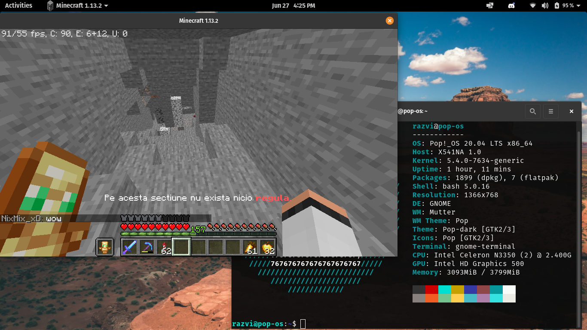

.png)

¿Qué es? Pop!_OS
Pop!_OS es una distribución Linux basada en Ubuntu, creada por System76. Se destaca por ofrecer una experiencia elegante, moderna y optimizada para productividad y desarrollo, con un enfoque especial en hardware.
¿Por qué esta distro?
Pop!_OS combina la estabilidad de Ubuntu con una interfaz pulida y herramientas pensadas para profesionales. Ya seas desarrollador, diseñador o usuario general, Pop!_OS ofrece todo lo que necesitas con un sistema limpio y potente.
Características principales
Ideal para Desarrolladores
Pop!_OS viene con herramientas de desarrollo preinstaladas. Soporte nativo para múltiples lenguajes, compiladores, IDEs y herramientas Git. Perfecto para programadores que necesitan un sistema listo para trabajar.
Interfaz Pulida y Moderna
Diseñado con GNOME Desktop pero personalizado por System76. La interfaz es limpia, intuitiva y moderna. Pop!_OS ofrece una experiencia visual superior con atajos inteligentes.
Productividad Optimizada
Pop!_OS incluye características pensadas para maximizar tu productividad. Gestor de ventanas mejorado, atajos de teclado inteligentes y multitarea sin fricciones.
Soporte de Hardware System76
Pop!_OS está optimizado para laptops y computadoras System76. Pero también funciona perfecto en cualquier otro hardware. Controladores propios para mayor compatibilidad y rendimiento.
Actualizaciones Confiables
Basado en Ubuntu LTS (versiones de soporte prolongado). Recibe actualizaciones de seguridad regularmente y puedes confiar en la estabilidad del sistema sin sorpresas desagradables.
Comunidad Fuerte
Pop!_OS tiene una comunidad activa de usuarios y desarrolladores. System76 proporciona soporte directo, documentación completa y está siempre escuchando feedback de la comunidad.
Productividad vs Otras Distros
Ubuntu Estándar
8.2/10
Velocidad: Estándar
Pop!_OS
9.8/10
Velocidad: Optimizada